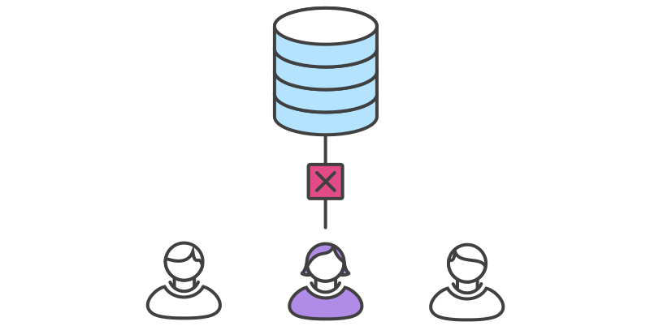
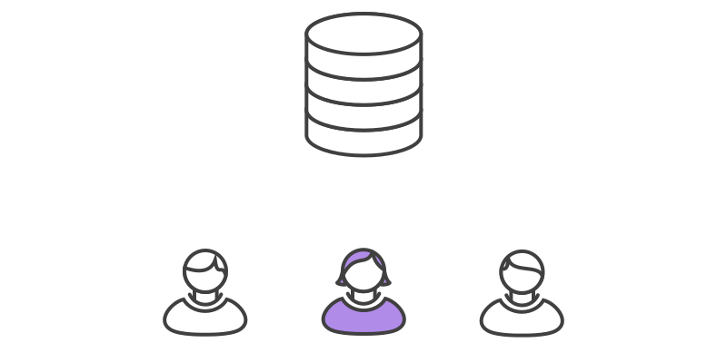

Git Workflow
What is Git Workflow?
Git Workflow is a recommendation on how to use Git to accomplish work in a consistent and productive manner.
Some things to consider when evaluating a Git workflow are:
- Does this workflow scale with team size?
- Is it easy to undo mistakes and errors with this workflow?
- Does this workflow impose any new unnecessary cognitive overhead to the team?
Types of workflows
- Centralized Workflow
- Feature Branch Workflow
- Gitflow Workflow
- Forking Workflow
Centralized Workflow
The Centralized Workflow is a great Git workflow for teams transitioning from SVN. Like Subversion, the Centralized Workflow uses a central repository to serve as the single point-of-entry for all changes to the project.
How it works?

Hosted central repositories
Central repositories are often created through 3rd party Git hosting services like Gitlab, Github, Bitbucket, etc.
Clone the central repository
git clone ssh://user@host/path/to/repo.git
Make changes and commit
git status # View the state of the repo
git add # Stage a file
git commit # Commit a file
Push new commits to central repository
git push origin master
Managing conflicts

Example
John works on his feature

Mary works on her feature

John publishes his feature

Mary tries to publish her feature
Mary rebases on top of John’s commit(s)

git pull --rebase origin master
Mary resolves a merge conflict

CONFLICT (content): Merge conflict in
# Unmerged paths:
# (use "git reset HEAD ..." to unstage)
# (use "git add/rm ..." as appropriate to mark resolution)
#
# both modified:
git add
git rebase --continue
git rebase --abort
Mary rebases on top of John’s commit(s)

git push origin master
The Centralized Workflow is great for small teams. The conflict resolution process detailed above can form a bottleneck as your team scales in size.
Gitflow Workflow
Gitflow Workflow is a Git workflow design that was first published and made popular by Vincent Driessen at nvie. The Gitflow Workflow defines a strict branching model designed around the project release. This provides a robust framework for managing larger projects.
How it works?

git branch develop
git push -u origin develop
Feature Branches

Creating a feature branch
git checkout develop
git checkout -b feature_branch
Finishing a feature branch
git checkout develop
git merge feature_branch
Release Branches

git checkout develop
git checkout -b release-0.1.0
Hotfix Branches

git checkout master
git checkout -b hotfix_branch
git checkout master
git merge hotfix_branch
git checkout develop
git merge hotfix_branch
git branch -D hotfix_branch
Takeaways to know about Gitflow are:
- The workflow is great for a release-based software workflow.
- Gitflow offers a dedicated channel for hotfixes to production.
The overall flow of Gitflow is:
- A develop branch is created from master
- A release branch is created from develop
- feature branches are created from develop
- When a feature is complete it is merged into the develop branch
- When the release branch is done it is merged into develop and master
- If an issue in master is detected a hotfix branch is created from master
- Once the hotfix is complete it is merged to both develop and master